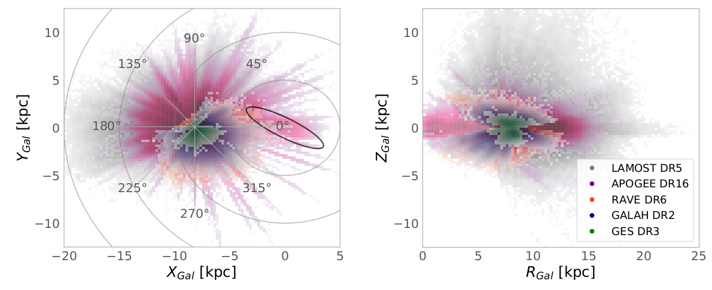
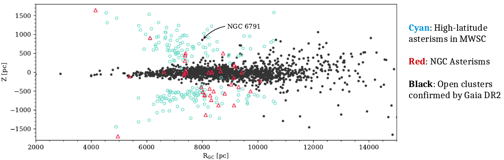

Project Summary
Galaxies are complex systems governed by competing physical processes that happen on very different space, time and energy scales, such as mergers, internal secular evolution, gas flows, star formation, supernova feedback, gas cooling etc. The field of Galactic archaeology aims at disentangling these processes, eventually unfolding the detailed formation history of the Milky Way by resolving all Galactic components and substructures and studying them in greatest possible detail.
Major observational campaigns, such as the astrometric ESA flagship mission Gaia, the asteroseismology missions CoRoT, Kepler, K2, TESS, and PLATO, as well as large-scale ground-based spectroscopic surveys, are dedicated to gathering kinematic, chemical, and age information for millions of stars. This wealth of new data has recently put the goal of reconstructing the Milky Way’s formation history within closer reach. While the Galactic astronomy community is convinced that combining as many observational constraints for as many stars as possible will be the way forward in the field, it is clear that the complexity and richness of the new data is also a major challenge to our state-of-the-art analysis methods. We already begin to see where current Galactic models can be improved, but many details are still hidden by selection effects that could not be fully accounted for before. The ultimate goal of building new models that reproduce the grand features of the Milky Way as well as its detailed chemo-kinematic-age structure is still far.
At this moment there is a pressing need in the field for more sophisticated comparisons to state-of-the-art models, and clear indications where the models should be improved. Also, there is still a lack of publically-available software that facilitates these complex model-data comparisons for the theoretical as well as for the observational community. This proposal addresses these points. We aim to undertake a major analysis project exploiting Gaia and complementary spectroscopic survey data to constrain Galactic models, and to simultaneously provide the community with legacy tools and datasets that will greatly facilitate such studies in the future. The project will produce value-added catalogues with precise astro-spectro-photometric ages, distances and extinctions for more than a million stars, and corresponding mock catalogues of many state-of-the-art Milky-Way models. All data products and code will be made available through a dedicated web interface, providing a legacy database for future modeling and analysis efforts.
Research Highlights
Mapping the Milky Way with Gaia DR2, photometric surveys, and the StarHorse code
Stellar distances and ages for millions of stars are needed to understand the chemo-dynamical history of Galaxy. The StarHorse code is a flexible python tool that I co-developed during my PhD, and that enables us to determine precise stellar parameters for millions of field stars with good Gaia parallaxes.

The Gaia DR2 data, combined with ground- and space-based photometric surceys, allowed us to study the three-dimensional distribution of stars beyond the parallax horizon, clearly revealing structures like the Galactic bar in stellar density maps ( ESA Press Release").
Anders, F.; Khalatyan, A.; Chiappini, C.; et al. (2019), Photo-astrometric distances, extinctions, and astrophysical parameters for Gaia DR2 stars brighter than G = 18, A&A, 628, A94
New StarHorse results for spectroscopic surveys

StarHorse also serves to determine distances, extinctions, and fundamental parameters for spectroscopic surveys. In our latest paper, we obtain an extensive chemical map of the Galactic plane using data from APOGEE DR16, with unprecedented coverage of the disc close to the Galactic mid-plane (|Z Gal | < 1 kpc) from the Galactic centre out to R Gal ∼ 20 kpc. The improvements in statistics as well as distance and extinction uncertainties confirmed the presence of Galactic the bar in stellar density and revealed a striking chemical duality in the innermost regions of the disc, which now clearly extends to the inner bulge. In the accompanying catalogues, we provide distances and extinctions for stars in other public released spectroscopic surveys: 324,999 in GALAH DR2, 4,928,715 in LAMOST DR5, 408,894 in RAVE DR6, and 6,095 in GES DR3.
Queiroz, A. B. A.; Anders, F.; Chiappini, C.; et al. (2020), From the bulge to the outer disc: StarHorse stellar parameters, distances, and extinctions for stars in APOGEE DR16 and other spectroscopic surveys, A&A, 638, A76
Queiroz, A. B. A.; Chiappini, C.; Perez-Villegas, A.; Khalatyan, A.; Anders, F.; et al. (2020), The Milky Way's bar and bulge revealed by APOGEE DR16 and Gaia DR2, A&A, subm.
Discovering and characterising open clusters with Gaia
Open clusters are groups of a dozen to several thousands of stars that were born together from the same parent molecular cloud, and remain bound by gravity. Their distances and ages can be estimated more easily than for individual stars (and as such they provide important quality tests for codes like StarHorse), and they can be used to trace the structure of our Galaxy.
Gaia provides us with precise measurements of parallaxes and proper motions that can be used to identify compact groups of stars traveling together through the Galaxy. Most of these newly discovered clusters cannot be seen in static images of the sky, but can easily be spotted using the Gaia measurements of distance and velocity (see e.g. this Gaia image of the week).
Within the GaiaUB group we have recently produced the largest and most complete homogeneous catalogue of Galactic open clusters, including precise ages, distances, and interstellar extinctions. I have mostly been involved in solving the mystery of the many "poorly studied" or "sparse" clusters that Gaia DR2 has proven to be false positives, analysing new cluster candidates, determining the completeness of the cluster catalogue, and measuring the cluster age function. For a short summary, see my 5min talk at the Spanish Astronomical Society Meeting 2020.

Anders, F., Cantat-Gaudin, T., Quadrino-Lodoso, I., Gieles, M., Jordi, C., Castro-Ginard, A., Balaguer-Núñez, L. (2020), The star cluster age function in the Galactic disc with Gaia DR2: Fewer old clusters and a low cluster formation efficiency , A&A Letters, accepted
Cantat-Gaudin, T., Anders, F., Castro-Ginard, A., Jordi, C., Romero-Gómez, M. et al. (2020), Painting a portrait of the Galactic disc with its stellar clusters, A&A, 640, A1
Anders, F., Cantat-Gaudin, T., Castro-Ginard, A.; Jordi, C.; Gieles, M.; Quadrino-Lodoso, I.; Balaguer-Núñez, L. (2020), Reanalysing the Galactic open-cluster population in light of Gaia DR2 , Contributions to the XIV.0 Scientific Meeting of the Spanish Astronomical Society, held 13-15 July 2020
Cantat-Gaudin, T., Anders, F. (2020), Clusters and mirages: cataloguing stellar aggregates in the Milky Way , A&A, 633, A99
Castro-Ginard, A., Jordi, C.; Luri, X.; Álvarez Cid-Fuentes, J.; Casamiquela, L.; Anders, F., et al. (2020), Hunting for open clusters in Gaia DR2: 582 new open clusters in the Galactic disc , A&A, 635, A45
Contribution to ongoing and future spectroscopic surveys
The StarHorse catalogues and my expertise in isochrone fitting, survey data analysis, and open clusters have allowed me to contribute to some ambitious projects of the Galactic astronomy community. Within the scope of the Marie Sklodowska-Curie Action I have been involved in the final science analysis of the RAVE survey, the production of value-added catalogues for the SDSS-IV/APOGEE survey, the analysis of the OCCASO survey, and the preparation for the 4MOST Disc & Bulge Survey surveys (4MIDABLE).

Guiglion, G.; Matijevic, G.; Queiroz, A. B. A., ..., Anders, F.; et al. (2020), The RAdial Velocity Experiment: Parameterization of RAVE spectra based on Convolutional Neural Network, A&A, in press
Ahumada, Romina; Allende Prieto, Carlos; Almeida, Andrés; Anders, F.; et al. (2020), The 16th Data Release of the Sloan Digital Sky Surveys: First Release from the APOGEE-2 Southern Survey and Full Release of eBOSS Spectra, ApJS, 249, 3
Casamiquela, L.; Blanco-Cuaresma, S.; Carrera, R.; ...; Anders, F.; et al. (2019), OCCASO - III. Iron peak and α elements of 18 open clusters. Comparison with chemical evolution models and field stars, MNRAS, 490, 1, 821
Chiappini, C.; Minchev, I.; Starkenburg, E.; Anders, F.; et al. (2019), 4MOST Consortium Survey 3: Milky Way Disc and Bulge Low-Resolution Survey (4MIDABLE-LR), The ESO Messenger, 175, 30
de Jong, R. S.; Agertz, O.; Berbel, A. A.; Aird, J.; Alexander, D. A.; Amarsi, A.; Anders, F.; et al. (2019), 4MOST: Project overview and information for the First Call for Proposals, The ESO Messenger, 175, 3